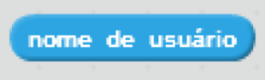
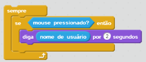

Informa o nome de usuário do usuário que está usando o projeto

Este bloco informa o nome de usuário de quem está usando o projeto.
Se quiser salvar o nome do usuário atual, você pode armazená-lo em uma variável ou em uma lista. Por exemplo,